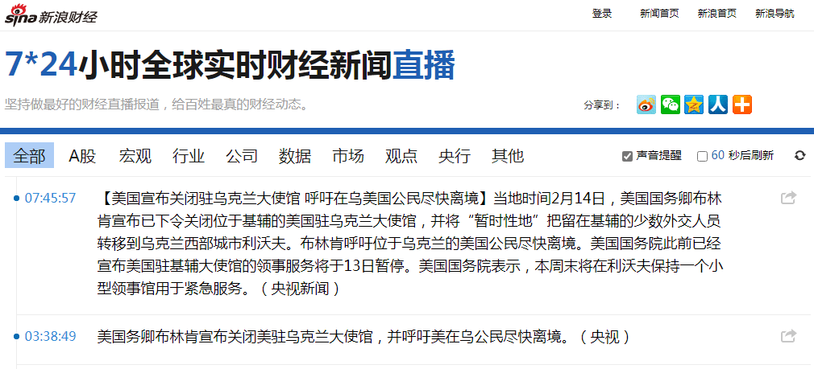
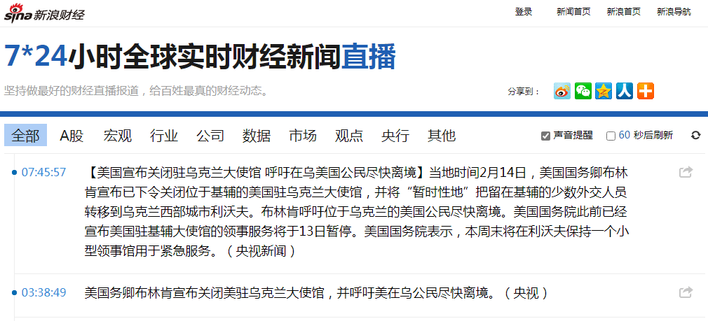

补充情报：
前情提要：
那么问题来了：2019年10月趾高气昂破门而入劈头就问「阅兵式你看了没有？咱中国现在今非昔比啦！」的家贼，到底是代表「国军」出场还是代表「共军」出场？抑或是混入「共军」队伍的「克格勃精英特务」？主持「阅兵式」的搭档德艺双馨贤妻良母的全票冻蒜人民领袖到底是「国军委座」还是「共军主席」？抑或是混入「国共两党」高层的「共产国际联络员」？
至于「军休所」当中出没的哥布林到底是国军还是共军，抑或是苏联红军，在这个大背景之下，已经没有意义了。顶多问问到底是斯大林转世灵童派来的高加索红军还是托洛茨基转世灵童派来的墨西哥红军罢了。
至于家贼拿我身份证银行卡干这干那，动辄找我这入不敷出的穷哔要钱订购整年「骆驼奶」，口称曾送来三千七百九十一箱半大额存单……那些第一手材料以前都备份过了，此处不再重复。
补充新鲜出炉的第一手材料：昨天下午出门去银行欣赏弹尽粮绝走投无路之末日景象，其它终端还空着的情况下，背后有老太太探头探脑，不惮以最大的恶意揣测不是掺和文革的克格勃燕子就是煽动七六、八九暴乱的克格勃燕子。通过北京国安和/或莫斯科迪纳摩「人脉」应该比我自己还清楚我的账户余额。这次克格勃离退休燕子亲自出场就是亲眼验证有没有「变数」，包括但不限于「档案老婆」是否在卷款跑路拍屁股走人时忘记搜刮干净并留下债务，或者「档案女朋友」是否留学期间过于节俭没来及花光我的工资卡刷爆信用卡。